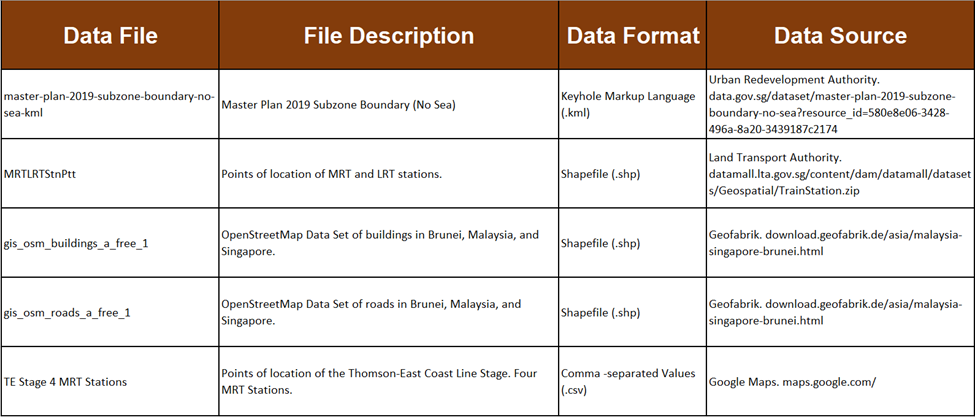
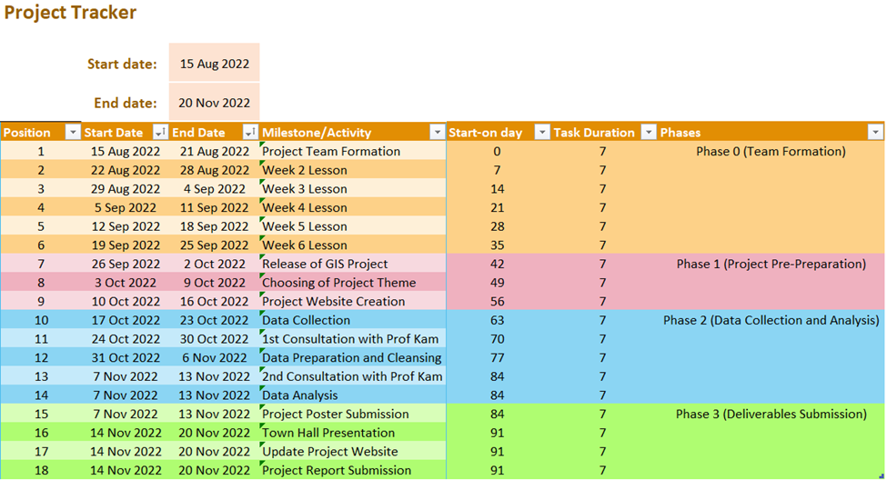

Project Overview
Project Motivations
There are 5 completed MRT lines in Singapore, most MRT Stations are located near amenities like shopping malls, and tourist sites, educational institutions, and offices. Travelling to most places will require a combination of bus and train rides. These MRT stations are also located near residential areas. With Singapore being an urban city, the rail network helps to transport an average of 2.1 million passengers daily. However, there is a small portion of residents who do not live near an MRT station and could only resort to taking busses or cars. With the plan of the TEL to give these residents a quicker access to the city.
Despite the benefits to increase accessibility, constructing the TEL comes with high costs. The Ministry of Transport has a long-term plan to place 80% of residents within a 10 minutes’ walk from a MRT station, but will these stage 4 MRT stations be effective in improving the accessibility of these residents living along East Coast as much as possible?
According to a survey regarding the willingness to walk to the MRT station based on the distance, about 30% of Singaporeans are willing to walk if the station is 800m away, dropping to about 10% if it’s beyond 1km.
With a high proportion of middle to high class people living along East Coast, who owns car(s) and have access to the current bus and MRT services, are these stage 4 stations still necessary?
Project Objective
Our team is tasked with studying the catchment area of these MRT Stations by doing a network analysis of each station and their surrounding vicinity.
By plotting a buffer and a polygon using the QNeat3 Pluggin, our group analysed the effectiveness of the construction of the TEL stage 4 MRT stations based on how convenient did it bring commuters from that vicinity to town and from elsewhere to that vicinity.
Dataset
The data that we collected comes from 4 sources: Urban Redevelopment Authority (URA), Land Transport Authority (LTA), Geofabrik GmbH, and Google Maps.

Project Schedule and Gantt Chart
